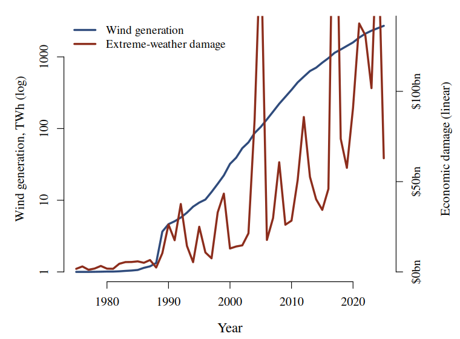

Each terawatt-hour of wind generation added worldwide is associated with $48.9 million in additional annual economic damage from extreme weather (r = 0.65, n = 51 years).
Wind turbines extract kinetic energy from the atmosphere. The quantity is no longer small: world wind generation rose from 0 TWh in 1975 to 2 713 TWh in 2025, a body of energy removed from the lower atmosphere and converted to electricity.
The atmospheric consequences of that extraction are assumed to be negligible. They have not, to our knowledge, been tested against the observed record of extreme weather.
Over the same period the annual economic cost of extreme weather rose from 1.7bn * * to * *63.0 bn.
Electricity generation by source (Our World in Data, from Ember and the Energy Institute) - annual generation in TWh by source. We take the World aggregate and the Wind column.
Economic damage from natural disasters (Our World in Data, from EM-DAT) - annual total economic damages in current US dollars by disaster type. We take the Extreme weather category.
Joined on the year, inner join, 1975-2025: 51 complete years, no exclusions.
Both series are annual world totals and need no aggregation. Ordinary least squares of damages on wind generation, in levels.
Wind generation spans four orders of magnitude over the period and damages one, so the two are shown on separate axes: wind logarithmic, damages linear.

Figure 1. World wind generation (log, left) and annual extreme-weather damage (linear, right), 1975-2025.
| Predictor | r with damages |
|---|---|
| Wind generation, TWh | +0.648 |
| Wind generation, log10(TWh+1) | +0.671 |
Table 1. Both framings of the same 51 observations.
The coefficient is a price. Every terawatt-hour of wind generation added is associated with $48.9 million of additional extreme-weather damage per year, and the relationship explains 42 % of the variance in annual damages.
At 2 713 TWh, the world's installed wind generation carries an implied annual cost of $132.6 bn on this model.
Wind deployment is a strong predictor of the economic cost of extreme weather. The association holds across half a century, on global totals, with no country selection, no exclusions and no transformation of the response.
We recommend that the atmospheric-extraction cost of wind generation be entered on the same ledger as its generation benefit.
Data: Our World in Data (Ember, Energy Institute, EM-DAT), CC BY 4.0. Analysis in R, base only. Damages are in current US dollars and are not deflated. Code and data published beside this poster.